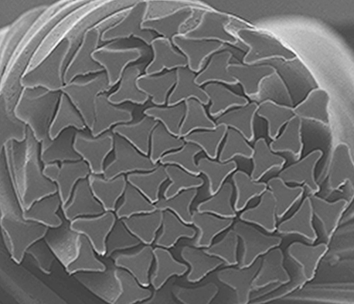

衣類・インテリア・ファブリックに使用できるソフトな風合いの衣料資材
| 急速吸水速乾ポリエステル糸 |
|
| サラッとした肌触りとソフトな風合いが生まれます。 |
|
KBセーレン独自の技術により生まれた、吸水速乾性に優れた生地となるY型断面ポリエステル糸「ソアリオンY」。サラッとした肌ざわり、ソフトな風合いが特長です。衣料全般、生活資材、インテリアに至るまで、幅広く応用できる多用途素材です。
|
| 特 長 |
| ■ 急速吸水速乾性 |
Y型断面のシャープな溝が水分を急速に吸い取り、拡散します。 |
| ■ カサ高軽量性 |
Y型断面の凸起部の相互作用による多くの空隙がフクラミ感を形成し、軽量でハリ・コシ感のある生地を生みだします。
|
| ■ ソフトな風合い |
Y型断面の異形効果によりサラッとした肌ざわりと仮燃加工により更にソフトな風合いが実現します。 |
|
| |

SEM：84/48SND写真
|
| 拡散性データ |
| 滴下30秒後 |
|
|
| ※ソアリオンYは綿・レギュラーポリエステルに 比較し拡散性に優れています。 |
|
| 吸水性データ |
| 5分後 |
|
|
| ※ソアリオンYは綿･レギュラーポリエステルに比較し吸水性に優れています。 |
|
| 代表銘柄・主要物性 |
| タイプ |
繊度（dT） |
強度（Cn/dT） |
伸度（％） |
熱収縮率（％） |
| 167/96SND（セミダルスピンドロー） |
163.4 |
3.50 |
30.0 |
6.0 |
| 100/24SNE（セミダル） |
100.0 |
2.25 |
41.0 |
18.0 |
| 84/48SND（セミダルスピンドロー） |
81.7 |
3.65 |
32.0 |
6.0 |
| 56/24BR（ブライト） |
53.6 |
3.71 |
33.4 |
5.3 |
| 56/24CD（セミダルカチオン） |
53.7 |
2.91 |
25.5 |
6.1 |
|

|
| |
| |
| |